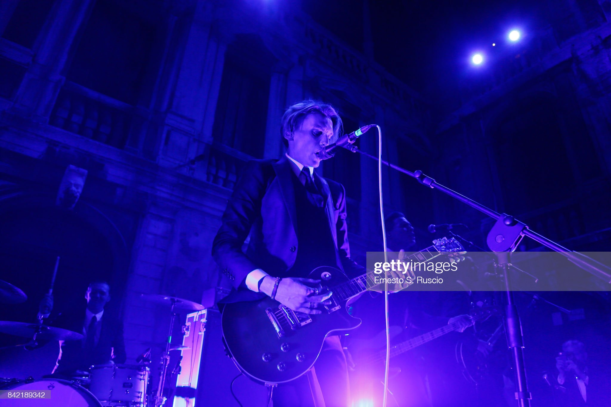
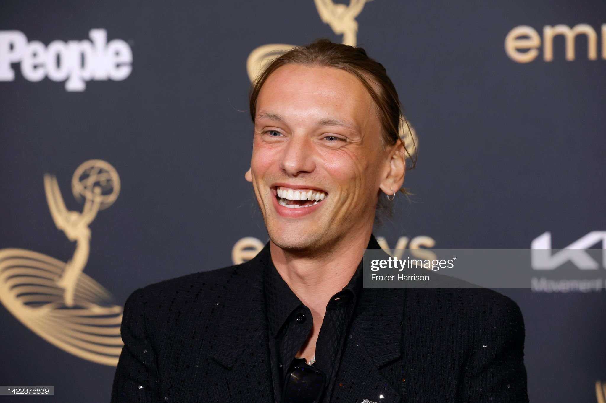
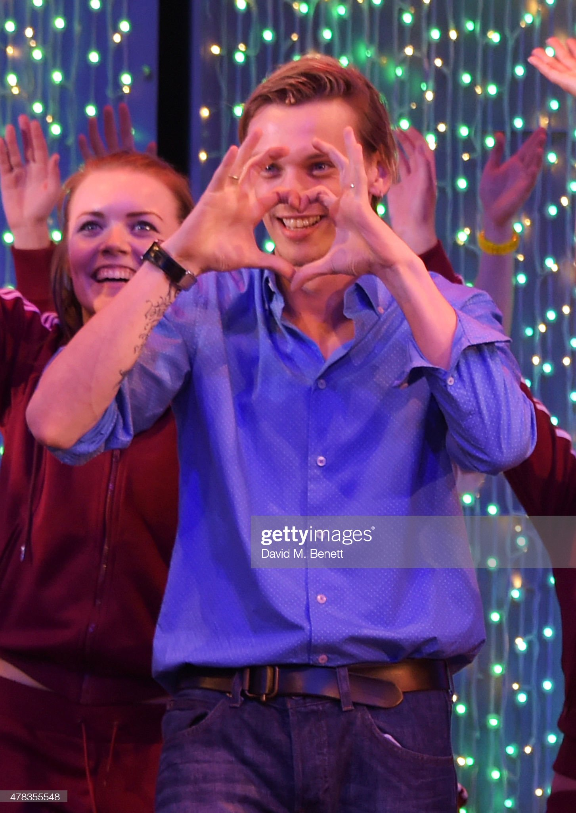
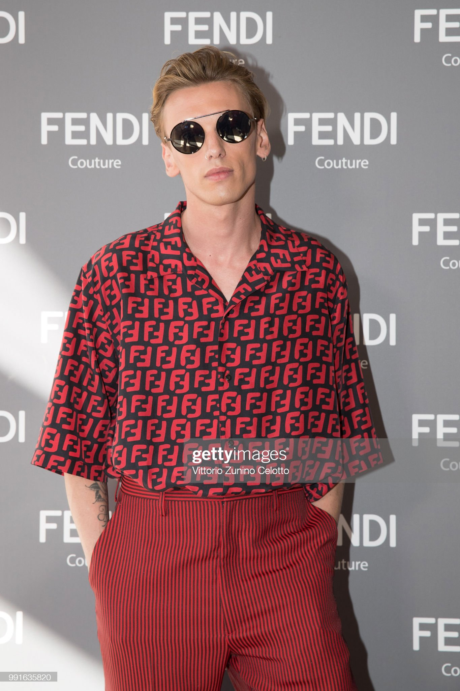
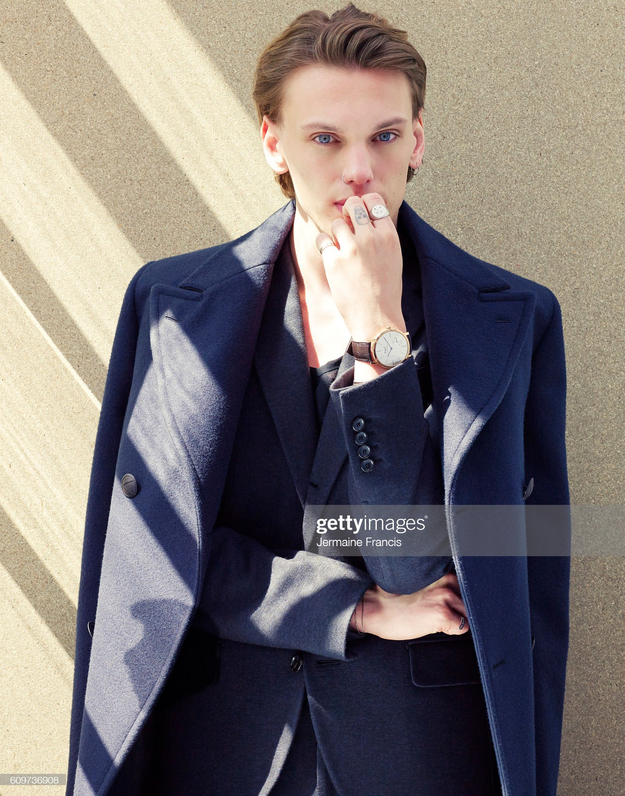

Jamie Bower, born James Metcalfe Campbell Bower, is a British musician, actor, and model. He was born November 22, 1988 in London, England. He began his acting and music careers while still in school. He is currently releasing music as a solo artist under his name after his previous band Counterfeit. dissolved in the fall of 2020. His main genre of music is rock, but his newer music has some gospel and folk influences as well. His most recent single, I Am, was released on August 12th, 2022. His most recent acting role is in the newest season of Stranger Things.
Jamie Bower
About
Discography
Albums and EPs
- Prologue-Live From the Alter (2020)
- Together We Are Stronger (2017)
- Come Get Some (2015)
Singles
- I Am (2022)
- Run On (2022)
- Crow (2022)
- Getting Over It (2020)
- The New Insane (2020)
- 11:44 (2020)
- It Gets Better (2019)
- Enough (2016)
- Addiction (2016)
Previous Bands
- Counterfeit. (2015-2020)
- The Darling Buds (2009-2015)
Filmography
Films
- Horizon (upcoming)
- True Haunting (upcoming)
- Six Days of Sistine (2019)
- Fantastic Beasts: The Crimes of Grindewald (2018)
- Thomas & Friends: Team Up with Thomas (2017)
- Thomas & Friends: Extraordinary Engines (2017)
- Thomas & Friends: Sodor's Legend of the Lost Treasure (2015)
- The Mortal Instruments: City of Bones (2013)
- The Twilight Saga: Breaking Dawn - Part 2 (2012)
- The Twilight Saga: Breaking Dawn - Part 1 (2011)
- Anonymous (2011)
- London Boulevard (2010)
- Harry Potter and the Deathly Hallows: Part 1 (2010)
- The Twilight Saga: New Moon (2009)
- RocknRolla (2008)
- Winter in Wartime (2008)
- Sweeney Todd: The Demon Barber of Fleet Street (2007)
TV
- Stranger Things (2022, 9 episodes)
- Thomas and Friends (2016-2020, 6 episodes)
- Urban Myths (2019, 1 episode)
- Will (2017, 10 episodes)
- Camelot (2011, 10 episodes)
- The Prisoner (2009, 6 episodes)
- The Dinner Party (2007 TV Movie)
Short Films and Music Videos
- Caer (2016 Short Film)
- Never Let Me Go by Florence + The Machine (2012 Music Video)
- Young (Belane) by The Xcerts (2010 Music Video)
Other Projects
West End
Bend It Like Beckham (May 2015-December 2015)
Modeling
Fendi Eyewear 2018
Burberry Spring/Summer 2014
Resources
Images from Getty Images